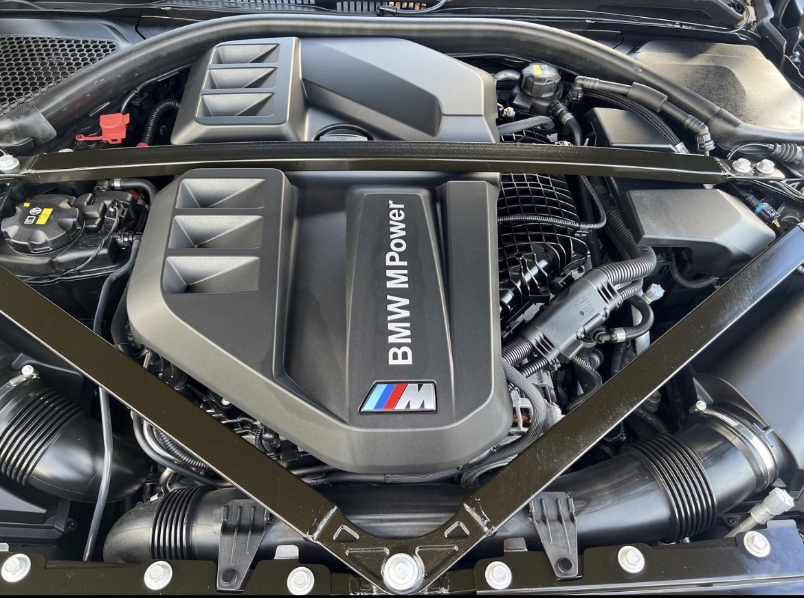
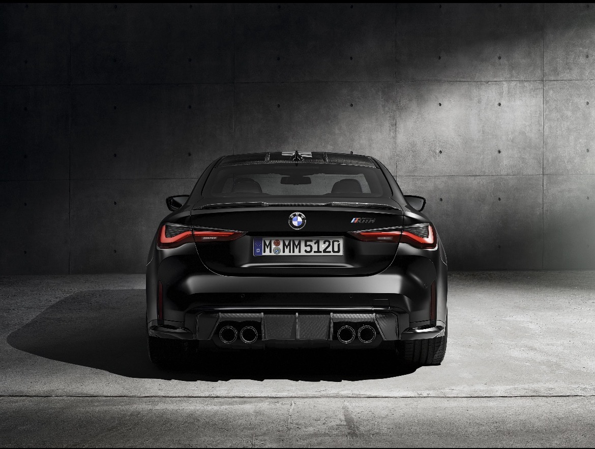

ENGINE
3.0L Inline-6 M TwinPower Turbo
The BMW M4 features a powerful 3.0-liter inline-six engine with M TwinPower Turbo technology, delivering impressive acceleration, precision, and a thrilling driving experience. Every press of the accelerator brings power to life.

THE CAR
BMW M4
The BMW M4 combines aggressive styling, luxury, and motorsport-inspired performance. With its bold design, aerodynamic lines, and advanced technology, it is built for drivers who demand both everyday comfort and extraordinary performance.

THE FEELING
Born to Perform
The BMW M4 is more than just a car. It's a symbol of passion, freedom, and precision. From its unmistakable sound to its sharp handling, every drive creates an unforgettable connection between driver and machine.